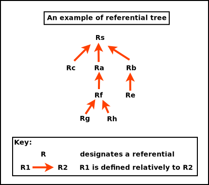

A popular convention, for example detailed in this section of the Red book, is to consider that the ordinates increase when going from the bottom of the viewport to its top; then for example the on-screen lower-left corner of the OpenGL canvas is (0,0), and its upper-right corner is (Width,Height).
As for us, we prefer the MyriadGUI 2D conventions, in which ordinates increase when going from the top of the viewport to its bottom, as depicted in the following figure:
Such a setting can be obtained thanks to (with Erlang conventions):
gl:matrixMode(?GL_PROJECTION),
gl:loadIdentity(),
% Like glu:ortho2D/4:
gl:ortho(_Left=0.0, _Right=float(CanvasWidth),
_Bottom=float(CanvasHeight), _Top=0.0, _Near=-1.0, _Far=1.0)
In this case, the viewport can be addressed like a usual (2D) framebuffer (like provided by any classical 2D backend such as SDL) obeying the coordinate system just described: if the width of the OpenGL canvas is 800 pixels and its height is 600 pixels, then its top-left on-screen corner is (0,0) and its bottom-right one is (799,599), and any pixel-level operation can be directly performed there "as usual". One may refer, in Myriad, to gui_opengl_2D_test.erl for a full example thereof, in which line-based letters are drawn to demonstrate these conventions.
Each time the OpenGL canvas is resized, this projection matrix will have to be updated, with the same procedure, yet based on the new dimensions.
Another option - still with axes respecting the Myriad 2D conventions - is to operate this time based on normalised, definition-independent coordinates, ranging in [0.0, 1.0], like in:
gl:matrixMode(?GL_PROJECTION),
gl:loadIdentity(),
gl:ortho(_Left=0.0, _Right=1.0, _Bottom=1.0, _Top=0.0, _Near=-1.0, _Far=1.0)
Using "stable", device-independent floats instead of integers directly accounting for pixels may be more convenient. For example a resizing of the viewport will then not require an update of the projection matrix. One may refer to gui_opengl_minimal_test.erl for a full example thereof.
We will rely here as well on the Myriad conventions, this time for 3D (not taking specifically time into account here):
These are thus Z-up conventions (the Z axis being vertical and designating altitudes), like modelling software such as Blender.
A Tree of Referentials
In the general case, either in 2D or (more often of interest here) in 3D, a given scene (a model) is made of a set of elements (ex: the model of a street may comprise a car, two bikes, a few people) that will have to be rendered from a given viewpoint (ex: a window on the second floor of a given building) onto the (flat) user screen (with suitable clipping, perspective division and projection on the viewport). Let's start from the intended result and unwind the process.
The rendering objective requires to have ultimately one's scene transformed as a whole in eyes coordinates (to obtain coordinates along the aforementioned 2D screen referential, along the X and Y axes - the Z one serving to sort out depth, as per our conventions).
For that, a prerequisite is to have the target scene correctly composed, with all its elements defined in the same (scene-global) space, in their respective position and orientation (then only the viewpoint, i.e. the virtual camera, can take into account the scene as a whole, to transform it to eye coordinates).
As each individual type of model (ex: a bike model) is natively defined in an abstract, local referential (an orthonormal basis) of its own, each actual model instance (ex: the first bike, the second bike) has to be specifically placed in the referential of the overall scene. This placement is either directly defined in that target space (ex: bike A is at this absolute position and orientation in the scene global referential) or relatively to a series of parent referentials (ex: this character rides bike B - and thus is defined relatively to it, knowing that the bike is placed relatively to the car, and that the car itself is placed relatively to the scene).
So in the general case, referentials are nested (recursively defined relatively to their parent) and form a tree whose root corresponds to the (possibly absolute) referential of the overall scene, like in:

A series of model transformations has thus to be operated in order to express all models in the scene referential:
(local referential of model Rh) -> (parent referential Rf) -> (parent referential Ra) -> (scene referential Rs)
For example the hand of a character may be defined in \(R_h\), itself defined relatively to its associated forearm in \(R_f\) up to the overall referential \(R_a\) of that character, defined relatively to the referential of the whole scene, \(R_s\). This referential may have no explicit parent defined, meaning implicitly that it is defined in the canonical, global referential.
Once the model is expressed as a whole in the scene-global referential, the next transformations have to be conducted : view and projection. The view transformation involves at least an extra referential, the one of the camera in charge of the rendering, which is \(R_c\), possibly defined relatively to \(R_s\).
So a geometry (ex: a part of the hand, defined in \(R_f\)) has been transformed upward in the referential tree in order to be expressed in the common, "global" scene referential \(R_s\), before being transformed last in the camera one, \(R_c\).
In practice, all these operations can be done thanks to the multiplication of homogeneous 4x4 matrices, each able to express any combination of rotations, scalings/reflections/shearings, translations, which thus include the transformation of one referential into another. Their product can be computed once, and then applying a vector (ex: corresponding to a vertex) to the resulting matrix allows to perform in one go the full composition thereof, encoding all model-view transformations and even the projection as well.
Noting \(P_{a{\rightarrow}b}\) the transition matrix transforming a vector \(\vec{V_a}\) expressed in \(R_a\) into its representation \(\vec{V_b}\) in \(R_b\), we have:
\begin{equation*}
\vec{V_b} = P_{a{\rightarrow}b}.\vec{V_a}
\end{equation*}
Thus, to express the geometry of said hand (natively defined in \(R_h\)) in camera space (hence in \(R_c\)), the following composition of referential changes shall be applied:
\begin{equation*}
P_{h{\rightarrow}c} = P_{s{\rightarrow}c}.P_{a{\rightarrow}s}.P_{f{\rightarrow}a}.P_{h{\rightarrow}f}.
\end{equation*}
So a whole series of transformations can be done by applying a single matrix - whose coordinates are determined now.
For that, let's consider an homogeneous 4x4 matrix is in the form of:
\begin{equation*}
M = \begin{bmatrix}
r_{11} & r_{12} & r_{13} & t_1 \\
r_{21} & r_{22} & r_{23} & t_2 \\
r_{31} & r_{32} & r_{33} & t_3 \\
0 & 0 & 0 & 1 \\
\end{bmatrix}
\end{equation*}
It can be interpreted as a matrix comprising two blocks of interest, \(R\) and \(\vec{T}\):
\begin{equation*}
M = P_{1\rightarrow2}
= \begin{bmatrix}
R & \vec{T} \\
0 & 1 \\
\end{bmatrix}
\end{equation*}
with:
- \(\matrix{R}\), which accounts for a 3D rotation submatrix:
\begin{equation*}
R = \begin{bmatrix}
r_{11} & r_{12} & r_{13} \\
r_{21} & r_{22} & r_{23} \\
r_{31} & r_{32} & r_{33} \\
\end{bmatrix}
\end{equation*}
- \(\vec{T}\), which accounts for a 3D translation vector:
\(\vec{T} = \begin{bmatrix} t1 \\ t2 \\ t3 \end{bmatrix}\)
Applying a (4x4 homogeneous) point \(P = \begin{Bmatrix} x \\ y \\ z \\ 1 \end{Bmatrix}\) to \(M\) yields \(P' = M.P\) where \(P'\) corresponds to P once it has been (1) rotated by \(\matrix{R}\) and then (2) translated by \(\vec{T}\) (order matters).
Let's consider now:

- two referentials (defined as orthonormal bases), \(R_1\) and \(R_2\); \(R_2\) may for example be defined relatively to \(R_1\); for a given point or vector \(U\), \(U_1\) will designate its coordinates in \(R_1\) (and \(U_2\) its coordinates in \(R_2\))
- \(P_{2\rightarrow1}\) the (homogeneous 4x4) transition matrix from \(R_2\) to \(R_1\), specified first by blocks then by coordinates as:
\begin{equation*}
P_{2\rightarrow1}
= \begin{bmatrix}
R & \vec{T} \\
0 & 1 \\
\end{bmatrix}
\end{equation*}
\begin{equation*}
= \begin{bmatrix}
r_{11} & r_{12} & r_{13} & t_1 \\
r_{21} & r_{22} & r_{23} & t_2 \\
r_{31} & r_{32} & r_{33} & t_3 \\
0 & 0 & 0 & 1 \\
\end{bmatrix}
\end{equation*}
- any (4D) point \(P\), whose coordinates are \(P_1\) in \(R_1\), and \(P_2\) in \(R_2\)
The objective is to determine \(P_{2\rightarrow1}\), i.e. \(R\) and \(\vec{T}\).
By definition of a transition matrix, for any point \(P\), we have: \(P_1 = P_{2\rightarrow1}.P_2 \qquad (1)\)
Let's study \(P_{2\rightarrow1}\) by first choosing a point \(P\) equal to the origin of \(R_2\) (shown as Ob in the figure).
By design, in homogeneous coordinates, \(P_2 = Ob_2 = \begin{Bmatrix} 0 \\ 0 \\ 0 \\ 1 \end{Bmatrix}\) and applying it on \((1)\) gives us: \(P_1 = Ob_1 = \begin{Bmatrix} t1 \\ t2 \\ t3 \\ 1 \end{Bmatrix}\).
So if \(Ob_1 = \begin{Bmatrix} XOb_1 \\ YOb_1 \\ ZOb_1 \\ 1 \end{Bmatrix}\), we have: \(\vec{T} = \vec{T_{2\rightarrow1}} = \begin{bmatrix} XOb_1 \\ YOb_1 \\ ZOb_1 \end{bmatrix}\).
Let's now determine the \(r_{xy}\) coordinates.
Let \(R_{2\rightarrow1}\) be the (3x3) rotation matrix transforming any vector expressed in \(R_2\) in its representation in \(R_1\): for any (3D) vector \(\vec{V}\), we have \(\vec{V_1} = R_{2\rightarrow1}.\vec{V_2} \qquad (2)\)
(we are dealing with vectors, not points, hence the origins are not involved here).
By choosing \(\vec{V}\) equal to the \(\vec{Ib}\) (abscissa) axis of \(R_2\) (shown as Ib in the figure), we have \(\vec{Ib_1} = R_{2\rightarrow1}.\vec{Ib_2}\)
Knowing that by design \(\vec{Ib_2} = \begin{bmatrix} 1 \\ 0 \\ 0 \end{bmatrix}\), \((2)\) gives us:
\begin{equation*}
\vec{Ib_1} = \begin{bmatrix} r_{11} \\ r_{21} \\ r_{31} \end{bmatrix}
= \begin{bmatrix} XIb_{1} \\ YIb_{1} \\ ZIb_{1} \end{bmatrix}
\end{equation*}
So the first column of the \(R\) matrix is \(\vec{Ib_1}\) , i.e. the first axis of \(R_2\) as expressed in \(R_1\).
Using in the same way the two other axes of \(R_2\) (shown as Jb and Kb in the figure), we see that:
\begin{equation*}
R = R_{2\rightarrow1}
\end{equation*}
\begin{equation*}
= \begin{bmatrix}
XIb_{1} & XJb_{1} & XKb_{1} \\
YIb_{1} & YJb_{1} & YKb_{1} \\
ZIb_{1} & ZJb_{1} & ZKb_{1} \\
\end{bmatrix}
\end{equation*}
So the transition matrix from \(R_2\) to \(R_1\) is:
\begin{equation*}
P_{2\rightarrow1}
= \begin{bmatrix}
R_{2\rightarrow1} & \vec{T_{2\rightarrow1}} \\
0 & 1 \\
\end{bmatrix}
= \begin{bmatrix}
XIb_1 & XJb_1 & XKb_1 & XOb_1 \\
YIb_1 & YJb_1 & YKb_1 & YOb_1 \\
ZIb_1 & ZJb_1 & ZKb_1 & ZOb_1 \\
0 & 0 & 0 & 1 \\
\end{bmatrix}
\end{equation*}
where:
- \(R_{2\rightarrow1}\) is the 3x3 rotation matrix converting vectors of \(R_2\) in \(R_1\), i.e. whose columns are the axes of \(R_2\) expressed in \(R_1\)
- \(\vec{T_{2\rightarrow1}} = Ob_1\) is the 3D vector of the coordinates of the origin of \(R_2\) as expressed in \(R_1\)
This also corresponds to a matrix obtained by describing the \(R_2\) referential in \(R_1\), by listing first the three (4D) vector axes of \(R_2\) then its (4D) origin, i.e. \(P_{2\rightarrow1} = \begin{bmatrix} \vec{Ib_1} && \vec{Jb_1} && \vec{Kb_1} && Ob_1 \end{bmatrix}\).
Often, transformations have to be used both ways, like in the case of a scene-to-camera transformation; as a consequence, transition matrices may have to be inversed, knowing that \((P_{2\rightarrow1})^{-1} = P_{1\rightarrow2}\) (since by definition \(P_{2\rightarrow1}.P_{1\rightarrow2} = Id\)).
An option to determine \(P_{1\rightarrow2}\) from \(P_{2\rightarrow1}\) could be to compute its inverse directly, as \(P_{1\rightarrow2} = (P_{2\rightarrow1})^{-1}\), yet \(P_{1\rightarrow2}\) may be determined in a simpler manner.
Indeed, for a given point \(P\), whose representation is \(P_1\) in \(R_1\) and \(P_2\) in \(R_2\), we obtain \(P_1 = P_{2\rightarrow1}.P_2\) by - through the way (4x4) matrices are multiplied - first applying a (3x3) rotation \(Rot_3\) to \(P_2\) and then a (3D) translation \(T_r\): \(P_1 = Rot_3.P_2 + T_r\) (in 3D; thus leaving out any fourth homogeneous coordinate); therefore \(P_2 = (Rot_3)^{-1}.(P_1 - T_r)\). Knowing that the inverse of an orthogonal matrix is its transpose, and that rotation matrices are orthogonal, \((Rot_3)^{-1} = (Rot_3)^\top\), and thus \(P_2 = (Rot_3)^\top.(P_1 - T_r) = (Rot_3)^\top.P_1 - (Rot_3)^\top.T_r)\). So if:
\begin{equation*}
P_{2\rightarrow1}
= \begin{bmatrix}
R_{2\rightarrow1} & \vec{T_{2\rightarrow1}} \\
0 & 1 \\
\end{bmatrix}
\end{equation*}
then:
\begin{equation*}
P_{1\rightarrow2}
= \begin{bmatrix}
(R_{2\rightarrow1})^\top & -(R_{2\rightarrow1})^\top.\vec{T_{2\rightarrow1}} \\
0 & 1 \\
\end{bmatrix}
= \begin{bmatrix}
XIb_1 & YIb_1 & ZIb_1 & -(XIb_1.XOb_1 + YIb_1.YOb_1 + ZIb_1.ZOb_1) \\
XJb_1 & YJb_1 & ZJb_1 & -(XJb_1.XOb_1 + YJb_1.YOb_1 + ZJb_1.ZOb_1) \\
XKb_1 & YKb_1 & ZKb_1 & -(XKb_1.XOb_1 + YKb_1.YOb_1 + ZKb_1.ZOb_1) \\
0 & 0 & 0 & 1 \\
\end{bmatrix}
\end{equation*}
Note
So, in a nutshell, the transition matrix from a referential \(R_\alpha\) to a referential \(R_\beta\) is:
\begin{equation*}
P_{\alpha\rightarrow\beta}
= \begin{bmatrix}
Rot_{\alpha\rightarrow\beta} & \vec{Tr_{\alpha\rightarrow\beta}} \\
0 & 1 \\
\end{bmatrix}
= \begin{bmatrix}
XIb_\beta & XJb_\beta & XKb_\beta & XOb_\beta \\
YIb_\beta & YJb_\beta & YKb_\beta & YOb_\beta \\
ZIb_\beta & ZJb_\beta & ZKb_\beta & ZOb_\beta \\
0 & 0 & 0 & 1 \\
\end{bmatrix}
\end{equation*}
where:
- \(Rot_{\alpha\rightarrow\beta}\) is the 3x3 rotation matrix converting vectors of \(R_\alpha\) in \(R_\beta\), i.e. whose columns are the axes of \(R_\alpha\) expressed in \(R_\beta\)
- \(\vec{Tr_{\alpha\rightarrow\beta}} = Ob_\beta\) is the 3D vector of the coordinates of the origin of \(R_\alpha\) as expressed in \(R_\beta\)
This also corresponds to a matrix obtained by describing the \(R_\alpha\) referential in \(R_\beta\), by listing first the three (4D) vector axes of \(R_\alpha\) then its (4D) origin, i.e. \(P_{\alpha\rightarrow\beta} = \begin{bmatrix} \vec{Ib_\beta} && \vec{Jb_\beta} && \vec{Kb_\beta} && Ob_\beta \end{bmatrix}\).
Its reciprocal (inverse transformation) is then:
\begin{equation*}
P_{\beta\rightarrow\alpha}
= \begin{bmatrix}
(Rot_{\alpha\rightarrow\beta})^\top & -(Rot_{\alpha\rightarrow\beta})^\top.\vec{Tr_{\alpha\rightarrow\beta}} \\
0 & 1 \\
\end{bmatrix}
= \begin{bmatrix}
XIb_\beta & YIb_\beta & ZIb_\beta & -(XIb_\beta.XOb_\beta + YIb_\beta.YOb_\beta + ZIb_\beta.ZOb_\beta) \\
XJb_\beta & YJb_\beta & ZJb_\beta & -(XJb_\beta.XOb_\beta + YJb_\beta.YOb_\beta + ZJb_\beta.ZOb_\beta) \\
XKb_\beta & YKb_\beta & ZKb_\beta & -(XKb_\beta.XOb_\beta + YKb_\beta.YOb_\beta + ZKb_\beta.ZOb_\beta) \\
0 & 0 & 0 & 1 \\
\end{bmatrix}
\end{equation*}
As a result, from the definition of a tree of referentials, we are able to compute the transition matrix transforming the representation of a vector expressed in any of them to its representation in any of the other referentials.
A special case of interest is, for the sake of rendering, to transform, through that tree, a local referential in which a geometry is defined into the one of the camera, defining where it is positioned and aimed ; in OpenGL parlance, this corresponds to the model-view matrix (for "modelling and viewing transformations") that we designate here as \(M_{mv}\) and which corresponds to \(P_{local{\rightarrow}camera}\).
Taking into account the last rendering step, the projection (comprising clipping, projection division and viewport transformation), which can be implemented as well thanks to a 4x4 (non-invertible) matrix designated here as \(M_p\), we see that a single combined overall matrix \(M_o = M_p.M_{mv}\) is sufficient to convey in one go all transformations that shall be applied to a given geometry for its rendering.